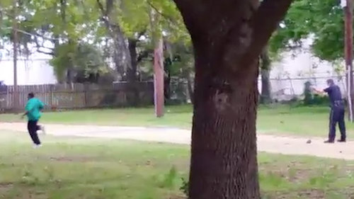

South Carolina Officer Gets Murder Charge in Man’s Death
By MICHAEL S. SCHMIDT and MATT APUZZO
A white police officer in North Charleston, S.C., has been charged with murder after a video surfaced showing him shooting and killing an apparently unarmed black man while he fled.

FATAL POLICE SHOOTING: In a video provided to
The New York Times, a police officer in North Charleston, S.C., is seen shooting an apparently unarmed man after a scuffle following a traffic stop.
The Opinion Pages
Israel’s Unworkable Demands on Iran
By THE EDITORIAL BOARD
Proposed changes are unrealistic and, if pursued, could end up leading to no nuclear deal at all.
Editorial: Can Rand Paul Win With His Principles?
OP-ED CONTRIBUTOR
Michael Bloomberg, Mayor of London?
By D. D. GUTTENPLAN
True, there’s much he could do here — starting with the trans fats in fish and chips.
Bittman: McDonald’s Turns ‘Progressive’
Opinion on Facebook »
 SECTIONS
SECTIONS
 SEARCH
SEARCH